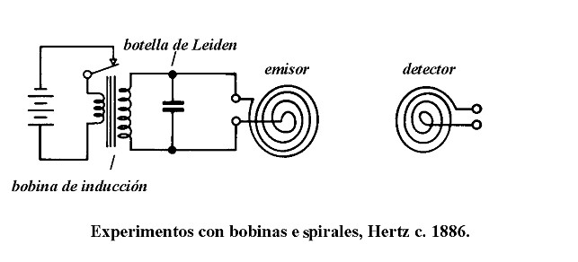

La longitud d'una ona és el periode, llavors si la multipliquem pel numero d'ones obtindrem la distància, i si tenim la distància i el temps podem trobar la velocitat Si tenim ones electromagnetiques la velocitat és c=3·10^8 m/s. Així podem trobar el diàmetre de l'Anell d'Hertz. La deducció que la velocitat és va fer Maxwell a les seves equacions de forma teorica als anys 1860's i al 1887 Hertz va fer experiments per demostrar les equacions teoriques de Maxwell existien a la realitat.
\\ $$\text{Si volem detectar un mòbil que emeti a 1800 MHz, quin diàmnetre és necessari per construir un anell de Hertz. Serà la meitat de la longitud d'ona. Sustituïm valors per tal de calcular el diametre aïllant la longitud d'ona.}$$ $$D=2\lambda$$ $$D=\text{diàmetre de l'aro de heart}$$ $$lambda=\frac{c}{f}=\frac{3·10^{8}\text{m/s}}{1800·10^{6}\text{cicles/s}}=0,16667 \text{m}=16,6667\text{cm}$$ $$f=\frac{1}{2\pi\sqrt{L·C}}$$La freqüència del mòbil és 1800 MHz, i la velocitat de la llum és c=3·10^8 m/s. Calculem la longitud d'ona i el diàmetre de l'Anell de Hertz. La longitud d'ona és la velocitat de la llum dividint la freqüència, és a dir c=3·10^8 m/s dividit per 1800 MHz= 1800·10^6 cicles/s que dona 0,16667m = 16,667 de longid d'ona. L'Anell de Hertz tindrà un diàmetre de la meitat de la longitud d'ona 8,33cm
La fórmula anterior es coneix com a fórmula de freqüència de resonància i és important perquè ens diu la relació que hi ha entre la freqúència que volem detectar què és la del mòbil com per expemple 1800MHz amb dos paràmetres d'elemnts electrònics del circuit. Realment en els temps de Hertz no eistien condensadors i bobines i utilitzaven per exemple l'ampolla de Leiden com a condensador i bobina. Actualment tenim condensadors i bobines electrònics que formen part tant dels mòbils per produir la freqüència de resonància que produeixen una ona portadora i aquesta ona a sobre porta unes altres ones que son les de audio i video. L'anell de Hertz funciona igual només detecta una freqúència de resonància perquè l'anell té un camp elèctric i magnètic que depèn del material de l'anell que és coure i el diàmetre i l'espai que hi ha buit de l'anell.
La capacitat de un condensador es mesura en Farads que és la unitat del S.I. i que indica la quantitat de càrregues elèctriques emmagatemades entre dos plaques. La unitat de Farad és enorme i s'utilitzen unitats submúltiples
La fórmula d'un condensador és:
$$C(capacitat)=\frac{Q(càrrega}{V(voltatge}$$La càrrega elèctrica d'un condensador té com a unitat el Coulomb i la capacitat d'emmagatzema 1 Coulomb en una diferència de potencial d'1 volt és 1 Farad.
La fórmula d'una bobina és:
$$L=\frac{N^2S\mu}{l}$$ $$\text L= valor de la inductància (H) vol dir Henrys$$ $$\text N=Número de voltes o espires de la bobina(adimensional)$$ $$\text \mu= Permeabilitat del nucli (Wb/Am)Wb vol dir Weber(unitat de flux magnètic) dividit Ampere per metre$$ $$\text S=Secció del nucli$$ $$\text l=Longitud deles $$
f=\frac{v}{\lambda}
| f | λ | D | C | L |
|---|---|---|---|---|
| 700 | 42,86 cm | 85,71cm | 1,03 pF | 50 |
| 1800 | 16,67 cm | 33,34 cm | 0.156 pF | 50 |
| 2500 | 12 cm | 24 cm | 0,081 pF | 50 |